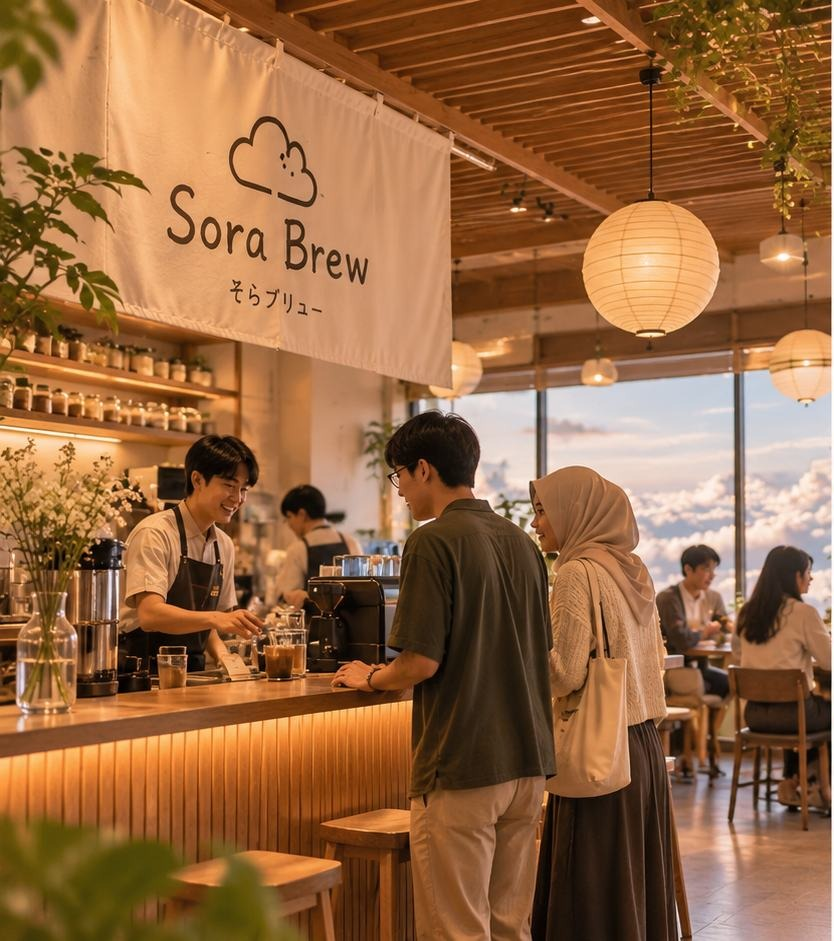
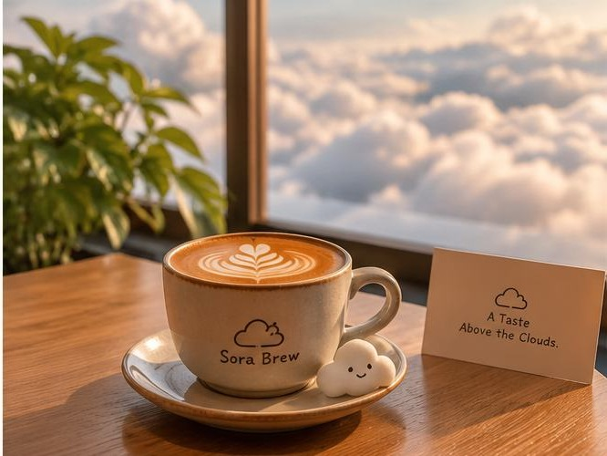

Morning,
above the clouds.
In Japanese, sora means sky. The idea came from early mornings on the coast — that soft first hour when the town is still quiet and the clouds sit low over the water.
We built Sora Brew to hold on to that hour. Japanese-style brewing, Malaysian warmth, and a room of wood, linen and morning light, with nothing that shouts.

- 01Brewed slowlyHand-drip and espresso, dialled in every morning.
- 02Made in-houseSando bread, cheesecake and dorayaki, before we open.
- 03Room to breatheLow music, soft light, window seats facing east.